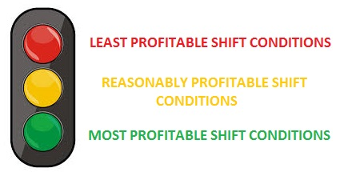

This application was developed in collaboration with
Cardiff University and developed by
Lauren Welsh.
The application is intended to be used to support changes within the production department in order to increase profit margins. For
further details about this application and its use within Viridor email
itsupport@viridor.co.uk
The analysis performed in this application was completed using automated methods within WEKA (a data mining application) and a
combination of manual data analytics. Cluster analysis was used to determine the relative profitability of a shift given its level
of production in comparison with other shifts.
Data for both Product A and Product B have been analysed using cluster analysis to give each shift a profitability measure. This measure can
be one of three values, following Viridor's current traffic light system used within Procurement and HR.

This system was chosen by the management department within the Stockport, UK site and can be discussed directly with them. For a detailed outline
of the analysis process and its findings please refer to
Cardiff University - Lauren Welsh: Dissertation 2015.
Q: In terms of shift groups, the groups rotate on a working rota which remains constant. Is it possible that one group is setting up for another?
A: It is possible that this is a contributing factor to the profitability of a shift. However the group rota distributes the shifts relatively evenly across the week. Therefore
any direct impact of one shift group setting up for another should be off-put against each group evenly in the course of a month.
Q: Are clean down days causing the difference seen in daily production levels?
A: There has been no evidence found in this analysis to suggest the clean down rota is the cause for the difference in production levels.
Further analysis would be required with details provided of this cycle. However, a six day cycle as is currently used should shift production
levels evenly across week days in the period of a month due to the clean down day not occurring on the same day consecutively.
Q: Is there one day which is always more profitable?
A: Thursday shifts have consistently out performed other days in production levels, making them the more profitable.
Q: What is the cause of the difference in profitability on Thursdays?
A: The analysis was unable to identify the root cause of this difference in production. It is possible that this cause is generated by
differences in shift groups and management on Thursday's. This is a topic which can be discussed further with the Head of Production.